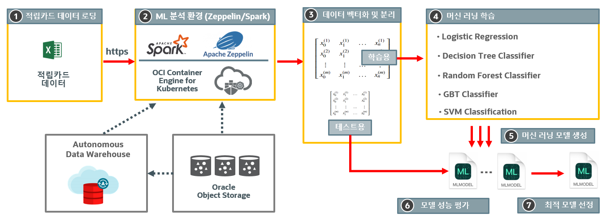
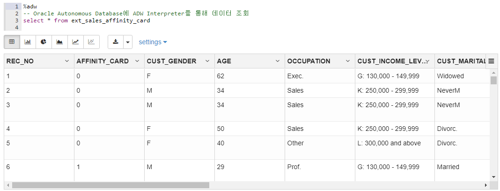
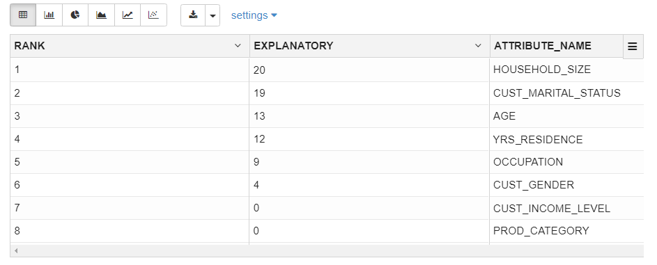
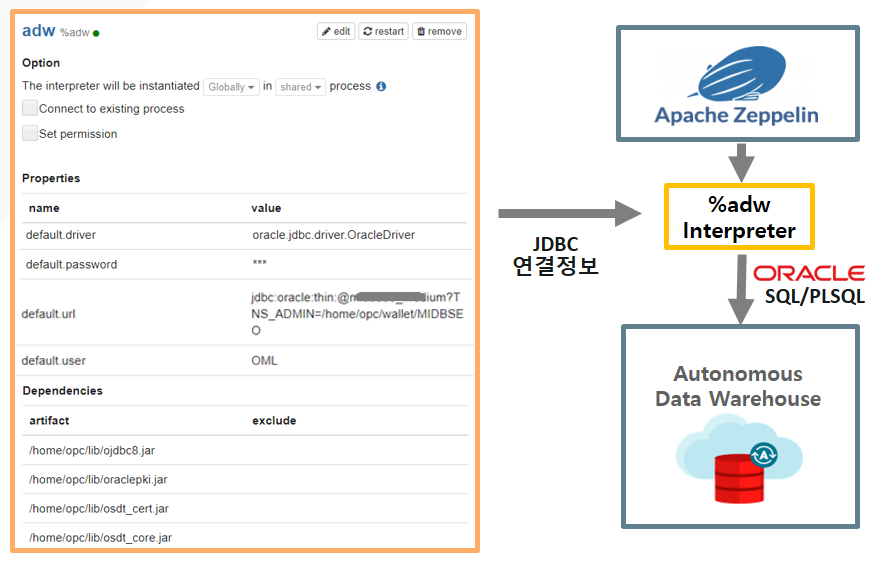
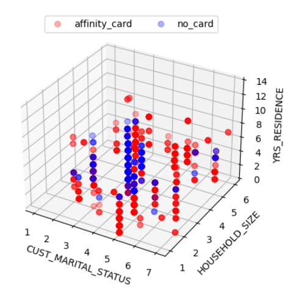
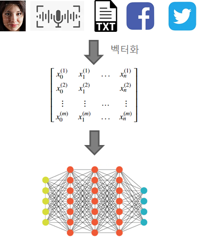
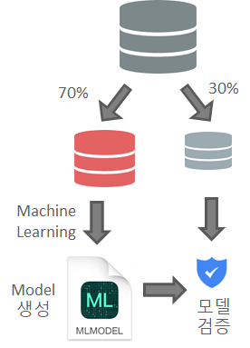

ML 분석 : Zeppelin/PySpark 기반 적립카드 발급 대상 분석
by Velucid ⏲ June 04, 2021
Topics
OCI OKE(Oracle Kubernetes Engine) 따라하기
OCI OKE 운영을 위한 기본 환경 구성
OCI OKE에 애플리케이션 배포하기
- OCI Registry: Container Image 등록 및 안전한 배포
- MongoDB 기반 방명록(PHP) 애플리케이션 배포
- NEW ML 분석 : Zeppelin/PySpark 구성 및 배포
- NEW ML 분석 : Zeppelin/PySpark 기반 적립카드 발급 대상 분석
- TBD : OCI Block Volume을 통한 Persistent Volume 구축
- TBD : OCI Autonomous Database와의 안전한 연결 구축
내용 설명
Apache Zeppelin Docker Image를 기반으로 5 개의 머신 러닝 학습을 수행하는 과정을 보여드립니다.
적립 카드 발급 대상 ML 모델 생성 과정
전체 ML 모델 생성 및 학습 과정은 Python을 기반으로 수행되며, 이를 수행하는 인터페이스는 Apache Zeppelin이 사용됩니다. Apache Zeppelin 최신 Docker Image에는 Zeppelin 이외에도 Python, Spark 분산 분석 환경이 함께 설치되어 있기 때문에, 손쉰게 GUI 인터페이스를 통해 ML 실습이 가능합니다.
적립 카드 데이터 로딩 : Web 상의 적립 카드 데이터를 pyspark의 Panda DataFrame으로 로딩
ML 분석 환경 : Zeppeline의 pyspark를 통해 스크립트 작성
데이터 벡터화 및 분리
- DataFrame의 데이터를 숫자 벡터로 변환
- 7:3으로 학습용과 테스트용 데이터로 분리
머신 러닝 학습, 모델 생성 및 평가
- 학습용 데이터를 기반으로 5 개의 ML 알고리즘으로 적립 카드 발급 대상을 학습
- 학습된 모델의 성능(예측치) 측정
최적 모델 선정
- 각 ML 알고리즘의 학습 성능을 비교 분석하여 최고의 예측치를 가지는 모델 선정

적립 카드 데이터 정보
적립 카드 데이터는 사용자의 구매 이력 데이터로서 다음과 같은 컬럼을 포함합니다.
- 적립 카드 발행 여부
- 나이, 성별, 직업 및 수입 수준
- 동거 가족 수 , 주거 기간, 지역
- 구매 물품 정보 및 가격
본 예제의 핵심은 적립 카드를 사용중인 구매자의 다양한 정보를 기반으로 "적립 카드 발급 대상"을 학습 시키는 것이며, 이를 기반으로 신규 사용자나 기존 사용자에게 "적립 카드 발급" 프로모션을 수행하는 것입니다.
다음은 Oracle Autonomous Database에 해당 데이터을 로딩한 후, Zeppelin을 통해 질의한 결과를 보여줍니다.

%adw는 Zeppelin에 수동으로 등록한 Oracle Autonomous Database와 연동하여 jdbc 질의를 수행하는 인터프리터입니다.
Oracle Autonomous Database가 제공하는 분석 함수인 Exaplain을 수행하면 다음과 같이 해당 테이블의 컬럼간의 연관성을 알 수 있습니다.
x%adwBEGIN -- 결과 테이블 초기화 BEGIN EXECUTE IMMEDIATE 'DROP TABLE sales_affinity_card_explain'; EXCEPTION WHEN OTHERS THEN NULL; END; -- 오라클 Advanced Analytics의 Explan 사용 -- MDL(Minimum Description Length) 기반 Attribute Importance 산출 DBMS_PREDICTIVE_ANALYTICS.EXPLAIN( data_table_name => 'ext_sales_affinity_card', explain_column_name => 'affinity_card', result_table_name => 'sales_affinity_card_explain');END;xxxxxxxxxx%adw-- 연관도가 0 보다 큰 Attribute 질의select rank, trunc(explanatory_value*100,0) as explanatory, attribute_namefrom sales_affinity_card_explainorder by rank
위의 결과로 알 수 있듯이, 적립카드 발행 여부는 "가족 수", "결혼 여부", "나이", "거주 년수", "직업", "성별" 순으로 연관도가 높은 것을 알 수 있습니다. 그러므로, 이 들 컬럼을 중점적으로 분석해야만 적립 카드 ML 분석에 더 정확한 결과를 얻을 수 있습니다.
Zeppelin과 OCI Autonomous Database와 연결은 하기 그림과 같이 Zeppelin의 인터페이스 등록을 통해 가능합니다. ADW의 Wallet을 다운 받아, Zeppelin 인스턴스에 저장한 후, 이를 default.url의 TNS_ADMIN으로 지정해야 합니다.

1) 적립 카드 데이터 로딩 (CSV > Panda DataFrame)
- 수행 코드
xxxxxxxxxx%pysparkimport pandas as pdfrom pyspark import SparkFiles# 적립 카드 정보 (.csv)를 DataFrame으로 전환spark.sparkContext.addFile("https://velucid.github.io/oci/oke/data/sales_affinity_card.csv")df = spark.read.csv("file://"+SparkFiles.get("sales_affinity_card.csv"), header=True, inferSchema= True)# 획득한 데이터 정보 출력df.printSchema()df.select("REC_NO", "AFFINITY_CARD", "AGE", "CUST_MARITAL_STATUS", "HOUSEHOLD_SIZE", "YRS_RESIDENCE").show(5)- 수행 결과
xxxxxxxxxxroot |-- REC_NO: integer (nullable = true) |-- AFFINITY_CARD: integer (nullable = true) |-- CUST_GENDER: string (nullable = true) |-- AGE: integer (nullable = true) |-- OCCUPATION: string (nullable = true) |-- CUST_INCOME_LEVEL: string (nullable = true) |-- CUST_MARITAL_STATUS: string (nullable = true) |-- HOUSEHOLD_SIZE: string (nullable = true) |-- YRS_RESIDENCE: integer (nullable = true) |-- PROD_NAME: string (nullable = true) |-- PROD_CATEGORY: string (nullable = true) |-- PROD_SUBCATEGORY: string (nullable = true) |-- PROD_LIST_PRICE: double (nullable = true) |-- QUANTITY_SOLD: integer (nullable = true) |-- AMOUNT_SOLD: double (nullable = true) |-- COUNTRY_NAME: string (nullable = true)+------+-------------+---+-------------------+--------------+-------------+|REC_NO|AFFINITY_CARD|AGE|CUST_MARITAL_STATUS|HOUSEHOLD_SIZE|YRS_RESIDENCE|+------+-------------+---+-------------------+--------------+-------------+| 1| 0| 62| Widowed| 2| 3|| 2| 0| 34| NeverM| 2| 6|| 3| 0| 34| NeverM| 2| 6|| 4| 0| 50| Divorc.| 2| 5|| 5| 0| 40| Divorc.| 2| 5|+------+-------------+---+-------------------+--------------+-------------+only showing top 5 rows2) 적립 카드 데이터 3D 분석 (Matplot 3D)
- 수행 코드
xxxxxxxxxx%pysparkimport numpy as npimport matplotlib as mplfrom mpl_toolkits.mplot3d import Axes3Dimport matplotlib.pyplot as pltdata = df.collect()CUST_MARITAL_STATUS = {'Mar-AF': 1, 'Mabsent': 2, 'Divorc.': 3, 'Married': 4, 'NeverM': 5, 'Separ.': 6, 'Widowed': 7}HOUSEHOLD_SIZE = {'1': 1, '2': 2, '3': 3, '4-5': 4, '9+': 5, '6-8': 6 }x3d1, y3d1, z3d1, x3d2, y3d2, z3d2 = [], [], [], [], [], []for r in data: if int(r['AFFINITY_CARD']) == 0: x3d1.append(CUST_MARITAL_STATUS[r['CUST_MARITAL_STATUS']]) y3d1.append(HOUSEHOLD_SIZE[r['HOUSEHOLD_SIZE']]) z3d1.append(int(r['AGE'])) else: x3d2.append(CUST_MARITAL_STATUS[r['CUST_MARITAL_STATUS']]) y3d2.append(HOUSEHOLD_SIZE[r['HOUSEHOLD_SIZE']]) z3d2.append(int(r['AGE'])) ax = plt.subplot(111, projection='3d')ax.plot(x3d1,y3d1,z3d1,'o',color='r', label='affinity_card', alpha=0.2)ax.plot(x3d2,y3d2,z3d2,'o',color='b', label='no_card', alpha=0.2)plt.legend(loc='upper center', numpoints=1, ncol=3, fontsize=10, bbox_to_anchor=(0.5, 1.05))plt.xlabel("CUST_MARITAL_STATUS")plt.ylabel("HOUSEHOLD_SIZE")ax.set_zlabel("AGE")z.show(plt)plt.close()- 수행 결과

데이터 벡터화, 전처리의 필요성
대부분의 머신러닝 알고리즘은 숫자 정보를 입력 데이터로 사용합니다. 이를 위해서는 텍스트와 비디오와 같은 비정형 데이터를 ML 알고리즘이 인식할 수 있는 숫자 정보 집합으로 변환하는 전처리를 수행해야 합니다.

3-1) 분석 테이블 데이터 전처리: 벡터(숫자 정보 집합)로 변환
- 수행 코드
xxxxxxxxxx%pysparkfrom pyspark.ml.feature import OneHotEncoderEstimator, StringIndexer, VectorAssemblerfrom pyspark.ml import Pipelineimport pandas as pdcols = df.columnsstages = []# 텍스트 컴럼에 대한 벡터 변환categoricalColumns = ["CUST_GENDER", "HOUSEHOLD_SIZE", "CUST_MARITAL_STATUS", "OCCUPATION"]for categoricalCol in categoricalColumns: stringIndexer = StringIndexer(inputCol=categoricalCol, outputCol=categoricalCol + "Index") encoder = OneHotEncoderEstimator(inputCols=[stringIndexer.getOutputCol()], outputCols=[categoricalCol + "classVec"]) stages += [stringIndexer, encoder]#레이블 컬럼 지정: 학습 대상 컬럼label_stringIdx = StringIndexer(inputCol = 'AFFINITY_CARD', outputCol = 'label')stages += [label_stringIdx]# 원래 숫자 컬럼 명시numericCols = ['AGE', 'YRS_RESIDENCE']assemblerInputs = [c + "classVec" for c in categoricalColumns] + numericColsassembler = VectorAssembler(inputCols=assemblerInputs, outputCol="features")stages += [assembler]pipeline = Pipeline(stages = stages)pipelineModel = pipeline.fit(df)df = pipelineModel.transform(df)selectedCols = ['label', 'features'] + colsdf2 = df.select(selectedCols)df2.select("label","features","REC_NO").show(10)- 수행 결과
xxxxxxxxxx+-----+--------------------+------+|label| features|REC_NO|+-----+--------------------+------+| 0.0|(27,[2,9,15,25,26...| 1|| 0.0|(27,[0,2,7,14,25,...| 2|| 0.0|(27,[0,2,7,14,25,...| 3|| 0.0|(27,[2,8,14,25,26...| 4|| 0.0|(27,[2,8,16,25,26...| 5|| 1.0|(27,[0,1,6,12,25,...| 6|| 0.0|(27,[0,1,6,19,25,...| 7|| 0.0|(27,[0,1,6,19,25,...| 8|| 0.0|(27,[2,8,17,25,26...| 9|| 0.0|(27,[4,8,15,25,26...| 10|+-----+--------------------+------+only showing top 10 rows
분석 테이블 데이터 전처리: 벡터(숫자 정보 집합)로 변환
머신 러닝 학습 과정에서 입력 데이터는 보통 7:3으로 분리되어 학습용과 교차 검증용으로 사용됩니다.

3-2) 분석 대상 데이터 분리 (학습, 테스트용)
- 수행 코드
xxxxxxxxxx%pysparkimport pandas as pdtrain, test = df2.randomSplit([0.7, 0.3], seed = 2018)print("Training Dataset Count: " + str(train.count()))train.select("features", "AFFINITY_CARD", "HOUSEHOLD_SIZE", "YRS_RESIDENCE", "CUST_MARITAL_STATUS").show(2)print("Test Dataset Count: " + str(test.count()))test.select("features", "AFFINITY_CARD", "HOUSEHOLD_SIZE", "YRS_RESIDENCE", "CUST_MARITAL_STATUS").show(2)- 수행 결과
xxxxxxxxxxTraining Dataset Count: 2001+--------------------+-------------+--------------+-------------+-------------------+| features|AFFINITY_CARD|HOUSEHOLD_SIZE|YRS_RESIDENCE|CUST_MARITAL_STATUS|+--------------------+-------------+--------------+-------------+-------------------+|(27,[0,1,6,12,25,...| 0| 3| 2| Married||(27,[0,1,6,12,25,...| 0| 3| 2| Married|+--------------------+-------------+--------------+-------------+-------------------+only showing top 2 rowsTest Dataset Count: 803+--------------------+-------------+--------------+-------------+-------------------+| features|AFFINITY_CARD|HOUSEHOLD_SIZE|YRS_RESIDENCE|CUST_MARITAL_STATUS|+--------------------+-------------+--------------+-------------+-------------------+|(27,[0,1,6,12,25,...| 0| 3| 3| Married||(27,[0,1,6,12,25,...| 0| 3| 3| Married|+--------------------+-------------+--------------+-------------+-------------------+only showing top 2 rows
ML 알고리즘 소개 : Regression과 Classification의 관계
회귀(Regression)와 분류(Classification)는 결과가 정해진 데이터를 학습하는 지도(Supervied) 학습의 대표적인 두 가지 유형입니다.
다양한 ML 분석 알고리즘들에 연계되어 두루 사용되고 있습니다. 예를 들어 SVM의 경우, 분류와 회귀는 물론 이상치 검출에도 사용됩니다.
| Regression(회귀) | Classification (분류) |
|---|---|
 |  |
| 평균과 같은 일정한 값으로 돌아가려는 경향을 이용한 통계학 기법 | 데이터가 어떤 종류(레이블)에 속하는지 분류해주는 학습 모델 |
| 실제값과 예측값의 차이(Residual)를 최소화 하는 회귀선을 찾아 예측에 사용 | 다양한 알고리즘(회귀 포함)을 통해 레이블을 최적으로 분리하는 경계를 찾아냄 |
| 예측 값으로 연속형 숫자 값이 사용됨 | 예측 값으로 카테고리/레이블과 같은 이산형 클래스가 사용됨 |
| 선형/비선형 회귀, 다항식 회귀, 로지스틱 회귀, 릿지, 라쏘, 엘라스틱, 서포트 벡터 머신, 신경망 | 결정 트리, CART, K-NN, 로지스틱 회귀, 나이브 베이즈, 앙상블, 서포트 벡터 머신, 신경망 |
ML 알고리즘 소개 : Linear Regression (선형 회귀)의 중요성]
| 다양한 회귀 알고리즘 | 선형 회귀의 중요성 |
|---|---|
 |  |
| 선형 회귀는 간편한 수식과 손쉬운 학습 방법으로 가장 많이 사용됨 | 비선형 회귀는 데이터의 특성에 따라 선별적으로 사용됨 |
| 다항식 선형 회귀는 직선에 비해 더 정확한 결과를 산출 하지만, 과적합 문제를 유발할 수 있음 | 비선형 회귀도 차원 변환 등을 통해 단순 선형 회귀로 변환하여 활용 가능 |
ML 알고리즘 소개 : 1) Decision Tree(결정 트리)와 2) Random Forest Classifier
| 결정 트리(Decision Tree) 모델을 이용한 아이리스 데이터 분류 결과 | Random Forest를 통한 성능 향상 |
|---|---|
 |  |
| ML 알고리즘 중 가장 직관적이고 이해하기 쉬우며 시각화가 용이한 알고리즘 | 여러 분류기의 결과를 결합하여 분류하는 앙상블(Ensemble) 학습 모델 |
| 균일도가 높은 데이터를 기준으로 트리 구조로 분할하여 분류 규칙을 찾아냄 | 데이터를 여러 개로 분리하여 결정 트리 분류기를 병렬로 적용하고 |
| 데이터의 스케일링과 정규화 같은 전처리 작업이 필요 없음 | 그 결과를 투표를 통해 가장 많이 선택된 분류를 최종 예측하는 방식 |
| 실제 상화에 맞는 완벽한 규칙의 생성이 어려움 | 데이터 분리 및 보팅을 통해 과적합을 피하고 정확도를 높임 |
4-1) Decision Tree Classifier 분석 결과 (77%)
- 수행 코드
xxxxxxxxxx%pysparkfrom pyspark.ml.classification import DecisionTreeClassifierfrom pyspark.ml.evaluation import BinaryClassificationEvaluatordt = DecisionTreeClassifier(featuresCol = 'features', labelCol = 'label', maxDepth = 5)dtModel = dt.fit(train)predictions = dtModel.transform(test)predictions.select('label', 'prediction', 'probability', 'HOUSEHOLD_SIZE', 'YRS_RESIDENCE', 'CUST_MARITAL_STATUS').show(5)evaluator = BinaryClassificationEvaluator()print("Test Area Under ROC: " + str(evaluator.evaluate(predictions, {evaluator.metricName: "areaUnderROC"})))- 수행 결과
xxxxxxxxxx+-----+----------+--------------------+--------------+-------------+-------------------+|label|prediction| probability|HOUSEHOLD_SIZE|YRS_RESIDENCE|CUST_MARITAL_STATUS|+-----+----------+--------------------+--------------+-------------+-------------------+| 0.0| 0.0|[0.98795180722891...| 3| 3| Married|| 0.0| 0.0|[0.98795180722891...| 3| 3| Married|| 0.0| 0.0|[0.98795180722891...| 3| 1| Married|| 0.0| 1.0|[0.24137931034482...| 3| 3| Married|| 0.0| 1.0|[0.24137931034482...| 3| 5| Married|+-----+----------+--------------------+--------------+-------------+-------------------+only showing top 5 rows
4-2) Random Forest Classifier 분석 결과 (91%)
- 수행 코드
xxxxxxxxxx%pysparkfrom pyspark.ml.classification import RandomForestClassifierfrom pyspark.ml.evaluation import BinaryClassificationEvaluatorrf = RandomForestClassifier(featuresCol = 'features', labelCol = 'label')rfModel = rf.fit(train)predictions = rfModel.transform(test)predictions.select('label', 'prediction', 'probability', 'HOUSEHOLD_SIZE', 'YRS_RESIDENCE', 'CUST_MARITAL_STATUS').show(5)evaluator = BinaryClassificationEvaluator()print("Test Area Under ROC: " + str(evaluator.evaluate(predictions, {evaluator.metricName: "areaUnderROC"})))- 수행 결과
xxxxxxxxxx+-----+----------+--------------------+--------------+-------------+-------------------+|label|prediction| probability|HOUSEHOLD_SIZE|YRS_RESIDENCE|CUST_MARITAL_STATUS|+-----+----------+--------------------+--------------+-------------+-------------------+| 0.0| 0.0|[0.81623412903032...| 3| 3| Married|| 0.0| 0.0|[0.81623412903032...| 3| 3| Married|| 0.0| 0.0|[0.82027668222181...| 3| 1| Married|| 0.0| 0.0|[0.59621461334518...| 3| 3| Married|| 0.0| 1.0|[0.44262115423861...| 3| 5| Married|+-----+----------+--------------------+--------------+-------------+-------------------+only showing top 5 rowsTest Area Under ROC: 0.912622041160356
ML 알고리즘 소개 : Support Vector Machine
SVM은 선형 커널을 기본으로 복잡한 비선형 문제를 해결하기 위해 다양한 Kernal 함수를 제공합니다. 이는 분류에 보다 적합하도록 기존 데이터에 차원 변환을 가하는 것입니다.
- SVM Kernal Trick을 이용한 아이리스 분류 결과 Link

ML 알고리즘 소개 : 3) Support Vector Machine 학습 모델
| Support Vecor Machine: 초평면을 통한 분류 | |
|---|---|
 |  |
| Decision Boudary 분리에 필요한 최소 개수의 Support Vector으로 최소한의 학습만으로 Optimal Hyperplane을 찾습니다. | 비선형 분석을 위해서는(XOR 문제등) 고비용의 고차원 피처 변환이 필요한데, Kernal 함수는 여기서 필요한 내적 연산을 대체하여 변환 비용을 최소화 합니다. |
| 클래스간에 가장 큰 마진(margin)을 가지는 결정 경계를 찾아내어 과적합을 최소화합니다. | 고차원 피처 변환이 필요한 다양한 분석(분류,회귀,이상치 검출)에 널리 활용되고 있습니다. |
| 텍스트 및 이미지, 단백질 등의 분류에 탁월한 성능을 보입니다. | Kernal 함수: 선형, 동차, 다항식, 가우시안(RBF), 시그모이드(쌍곡탄젠트) |
4-3) Linear SVM 분석 결과 (83%)
- 수행 코드
xxxxxxxxxx%pysparkfrom pyspark.ml.classification import LinearSVCfrom pyspark.ml.evaluation import BinaryClassificationEvaluatorlsvc = LinearSVC(maxIter=10, regParam=0.1)lsvcModel = lsvc.fit(train)predictions = lsvcModel.transform(test)predictions.select('label', 'prediction', 'HOUSEHOLD_SIZE', 'YRS_RESIDENCE', 'CUST_MARITAL_STATUS').show(5)evaluator = BinaryClassificationEvaluator()print("Test Area Under ROC: " + str(evaluator.evaluate(predictions, {evaluator.metricName: "areaUnderROC"})))- 수행 결과
xxxxxxxxxx+-----+----------+--------------+-------------+-------------------+|label|prediction|HOUSEHOLD_SIZE|YRS_RESIDENCE|CUST_MARITAL_STATUS|+-----+----------+--------------+-------------+-------------------+| 0.0| 0.0| 3| 3| Married|| 0.0| 0.0| 3| 3| Married|| 0.0| 0.0| 3| 1| Married|| 0.0| 0.0| 3| 3| Married|| 0.0| 0.0| 3| 5| Married|+-----+----------+--------------+-------------+-------------------+only showing top 5 rowsTest Area Under ROC: 0.8334533258411203
[ML 알고리즘 소개 : 4) Logistic Regression]
로지스틱 회귀는 선형 회귀 방식을 분류에 적용한 알고리즘입니다. 선형 함수 대신 자연, 사회 현상에서 자주 발생하는 시그모이드 함수를 사용합니다. 시그모이드 함수는 신경망에도 활성함수로 초기에 많이 사용되었습니다.
- 회귀: 데이터의 특성과 분포를 나타내는 최적의 시그모이드 곡선(로짓변환)을 찾고,
- 분류: 이를 기준으로 상위와 하위로 분류합니다.
- 결과로 레이블 [0,1] 또는 숫자(0 ~ 1)을 모두 얻을 수 있습니다.


4-4) Logistic Regression 분석 결과 (89%)
- 수행 코드
xxxxxxxxxx%pysparkfrom pyspark.ml.classification import LogisticRegressionfrom pyspark.ml.evaluation import BinaryClassificationEvaluatorlr = LogisticRegression(featuresCol = 'features', labelCol = 'label', maxIter=10)lrModel = lr.fit(train)predictions = lrModel.transform(test)predictions.select('label', 'prediction', 'probability', 'HOUSEHOLD_SIZE', 'YRS_RESIDENCE', 'CUST_MARITAL_STATUS').show(5)evaluator = BinaryClassificationEvaluator()print("Test Area Under ROC: " + str(evaluator.evaluate(predictions, {evaluator.metricName: "areaUnderROC"})))- 수행 결과
xxxxxxxxxx+-----+----------+--------------------+--------------+-------------+-------------------+|label|prediction| probability|HOUSEHOLD_SIZE|YRS_RESIDENCE|CUST_MARITAL_STATUS|+-----+----------+--------------------+--------------+-------------+-------------------+| 0.0| 1.0|[0.43667953988177...| 3| 3| Married|| 0.0| 1.0|[0.43667953988177...| 3| 3| Married|| 0.0| 0.0|[0.64116044221858...| 3| 1| Married|| 0.0| 1.0|[0.44884795708763...| 3| 3| Married|| 0.0| 1.0|[0.26876020848898...| 3| 5| Married|+-----+----------+--------------------+--------------+-------------+-------------------+only showing top 5 rowsTest Area Under ROC: 0.892533539369249
ML 알고리즘 소개 : Boosting Algorithm
간단한 결정트리 분류기(약한 분류기)로 먼저 분류한 후, 잘못 예측한 데이터를 가중치(+/-)를 주어 오류를 보정/변경하고, 이를 기반으로 재분류하는 과정을 순차적으로 반복하여 모델들을 학습시키는 앙상블 기법입니다. 오류 보정 방식이기에 분류 효율이 상대적으로 좋으나 순차적인 학습 과정때문에 학습 시간이 오래 걸리고 과적합 오류를 유발할 수 있습니다.

ML 알고리즘 소개 : 5) Gradient Boosted Tree
Boosting Algorithm의 가중치 변경(오류 보정)에 머신 러닝에서 많이 사용되는 경사 하강법(Gradient Descent)을 사용한다. 분류와 회귀에 모두 사용된다. GBT의 느린 수행 시간과 과적합 문제를 해결한 XGBoost, LightBoost등으로로 발전되어 분류 분야에서 많이 사용되고 있습니다.

4-5) GBT Classifier 분석 결과 (94%)
- 수행 코드
xxxxxxxxxx%pysparkfrom pyspark.ml.classification import GBTClassifierfrom pyspark.ml.evaluation import BinaryClassificationEvaluatorgbt = GBTClassifier(maxIter=10)gbtModel = gbt.fit(train)predictions = gbtModel.transform(test)predictions.select('label', 'prediction', 'probability', 'HOUSEHOLD_SIZE', 'YRS_RESIDENCE', 'CUST_MARITAL_STATUS').show(5)evaluator = BinaryClassificationEvaluator()print("Test Area Under ROC: " + str(evaluator.evaluate(predictions, {evaluator.metricName: "areaUnderROC"})))- 수행 결과
xxxxxxxxxx+-----+----------+--------------------+--------------+-------------+-------------------+|label|prediction| probability|HOUSEHOLD_SIZE|YRS_RESIDENCE|CUST_MARITAL_STATUS|+-----+----------+--------------------+--------------+-------------+-------------------+| 0.0| 0.0|[0.90477470826839...| 3| 3| Married|| 0.0| 0.0|[0.90477470826839...| 3| 3| Married|| 0.0| 0.0|[0.90477470826839...| 3| 1| Married|| 0.0| 1.0|[0.37712590300593...| 3| 3| Married|| 0.0| 1.0|[0.22325900010031...| 3| 5| Married|+-----+----------+--------------------+--------------+-------------+-------------------+only showing top 5 rowsTest Area Under ROC: 0.9478295989323592